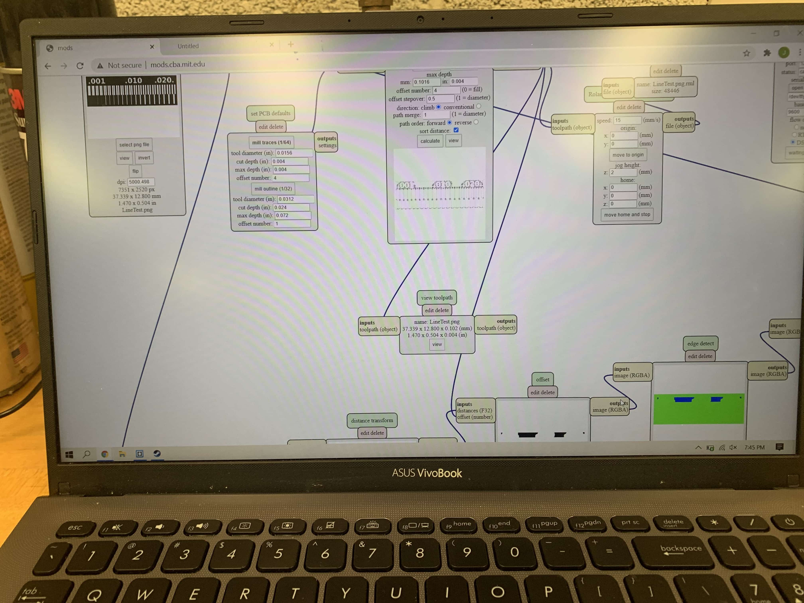

Week 5
Electronic Production.
This week's assignment is a little bit different from the previous assignments, because It consists of two assignments rather than one. The first part is the group assignment that requires describing our laser cutting machine by checking the focus, power, speed, rate, kerf, and joint clearance. The second part is the individual assignment that requires designing, cutting, and assembling a parametric press-fit construction kit. Also, we need to make a vinyl cutting using the vinyl cutter.

Group Assignment:
- Characterize the specifications of a PCB production process.
Individual Assignment:
- Make an in-circuit programmer by milling the PCB or other processes.
The machine used:
Roland SRM-20 Precision Desktop Mill
Feed Rate
Feed rate is the velocity at which the cutter is fed, that is, advanced against the workpiece. It is expressed in units of distance per revolution for turning and boring (typically inches per revolution [ipr] or millimeters per revolution).
The Feed rate for the Roland is 0.1 mm/sec ~ 30 mm/sec
Spindle speed
The spindle speed is the rotational frequency of the spindle of the machine, measured in revolutions per minute (RPM). The preferred speed is determined by working backward from the desired surface speed (sfm or m/min) and incorporating the diameter (of the workpiece or cutter).
The Spindle speed for the Roland is 3000 ~ 7000 rpm
Plunge rate
Plunge rate is the speed at which the router bit is driven down into the material when starting a cut and will vary depending on the bit used and the material being processed. Sometimes it is possible to cut at a faster feed rate by increasing the spindle rpm.
Depth of cut
The measurement. (normally in inches or millimeters) of how wide. and deep the tool cuts into the workpiece. Speed, feed and DOC work together to determine the Metal Removal Rate (MRR).
Tooling
Tooling, also known as machine tooling, is the process of acquiring the manufacturing components and machines needed for production. The common categories of machine tooling include fixtures, jigs, gauges, molds, dies, cutting equipment and patterns.
Group Project
Testing File:
For the test we went to the Fab Academy Tutorial Page to get the Test File. This is seen below:

After this we go to the Fab Modules to input our PNG file and get an RML file. At the start the Mods website is a plain website with nothing but a really faint grid. 1 right click later we have the full blown process.
- First right click -> "programs" -> "open server program" -> "Roland" -> "SRM-20" -> "PCB png"
After following the first step you should get a page full of modules that converts PNG in to a vecotr image and then converts that into a file that can be understood by the Roland SRM-20 Precision Mill.

We struggled quite a bit in actually milling this board in truth. In our time working on this we never actually finished milling the piece. Now what problems did we run into? What a wonderful question! For one the first time that we started working on it in mods we accidentally opened the wrong program. We knew that it was a server program under Roland Mill, however we accidentally picked MDX-20 as opposed SRM-20. Now if you were wondering whether or not this would be a big deal turns out yes. What basically ended up happening was it milled out a tiny little square of all of the copper as opposed to an actual shape.

This was admittedly upsetting to us, but even worse we didn’t even have that happen the first time we tried to print it. The first time we tried to print it there was an issue with the Z-axis so instead of milling it just slightly skimmed over the surface. Since this issue occurred we weren’t able to uncover our larger mistake until we actually did the whole process twice.

Twice wasn’t the end of it though. Since at this point in time we still had a little ambition and faith in our own capabilities, so we went back through to actually pick the right server program. This naturally led us in the right direction in regards to size, and actually, ya know cutting something out. Our own incompetence still got in our way though, and we proceeded to mess up the zero point for the Z-axis about three times. One time, we had the axes perfectly set and felt really good. However when we went to cut it just didn’t cut at all, it stayed off of the surface the entire time. We assumed that it may have been a file issue.

In retrospect we now know that the team member who taped the board to the machine did a poor job, and the piece was exceptionally uneven. Nonetheless we went back to mods to try again. This time however the team member who was doing the work in mods made some mistakes, that the rest of us didn’t catch, and forgot to properly zero everything, so when we ran this file the bit shot up about 20mm and started carving away our board out of thin air.
Luckily after going through fixing that issue, and at this point a newly discovered tape issue, we went at it again, and very neatly carved out our board. Yay! The celebration was undercut however as when we went to actually cut it out of the larger piece, we messed up again, and the whole thing didn’t even cut. At That is where we find ourselves now. With our once hopeful eyes now downcast, defeated by a machine. However for as much as it was a discouraging, moral breaking event, I think we’ve learned a lot. At very least we’ve learned plenty of ways to not use the mill and I think that as we go forward we’ll all be better makers for having gone through this. At very least I hope we’ll be able to actually mill a board.
Personal Project
FabTinyISP:
For the personal assignment I made a FabTinyISP. it is basically a computer that programs other computers. It composes of resistors, diodes, LED, header pins and an ATtiny 45. the first two resistors makes sure that the computer recognizes the FabTinyISP as a valid device, the LED is used as a user interface, header pins are used for information transfer and the ATtiny 45 is used as the brain of the FabTinyISP.
Before putting the electronics on, I need to first cut out the FabTinyISP from the PCB using Roland. For this I used the
Fab Academy Tutorial page for FabTinyISP and downloaded the PNG images for tracing and the outline cutout.Then, I uploaded my files to the Vpanel software and cutout the FabTinyISP.
When it was finished I got this:
{kind=link}
{kind=link}

Then I procceeded to cut the entire board out

I now had to sodder the components together accordding to the tutorial given below.


This is what my work bench looked like:

After completing the soldering process, I have to program my FabTinyISP. For this, in my lab there were 2 options: either use a programmer (another FabTinyISP that already has been programmed and reset fuse blown) or ATAVRISP (an in-circuit/in-system programmer). I chose to use another FabTinyISP to program my board.

However, before we start programming we need to download the proper softwares and firmwares. Luckily this was entirely set up before. More details can be foundhere
After this, I used multiple dupont wires to connect the other FabTinyISP to my FabTinyISP via the header pins and then plugged them both into the computer.
After plugging both of the FabTinyISPs and checking that both of them were showing the red light, I typed "make flash" on the command line terminal and this uploaded the information from the other FabTinyISP to my FabTinyISP. After finishing this I typed "lsusb" to check if the computer was seeing my ISP or not.
When I saw my FabTinyISP and was sure that it was working, I typed "make rstdisbl" to burn the reset fuse on my FabTinyISP. The reason for this is, if you don't burn the reset fuse your FabTinyISP can always be reprogrammed or can be overriden by someone.
{kind=link}
{kind=link}
{kind=link}